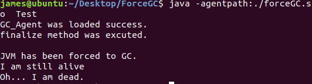

JVM TI (JVM Tool Interface) 是用来开发和监测jvm的编程接口。
开发文档:https://docs.oracle.com/javase/8/docs/platform/jvmti/jvmti.html
https://blog.csdn.net/yczz/article/details/39034223
https://blog.csdn.net/ddelphine/article/details/79695947
JVM TI 提供了许多JVM相关的接口，强制GC的接口是：
jvmtiError ForceGarbageCollection(jvmtiEnv* env)
可以在被监测的测试类中定义原生的native方法，然后用C/C++调用JVM TI提供的接口来实现native方法，最后编译成动态链接库.dll（linux系统为 shared object 文件，.so）
编写简单的agent
源码引用头文件#include<jvmti.h>,该头文件在jdk安装目录的include目录下。#include<jni_md.h>，windows系统中该头文件在jdk安装目录include\win32下，linux系统则在相应的include/linux目录下。在编译生成.dll/.so文件时要添加这两个头文件的搜索路径。
ForceGC.c -fPIC -shared -o forceGC.so
具体编译情况依据系统，语言和编译器
linux环境下 ForceGC.c1
2
3
4
5
6
7
8
9
10
11
12
13
14
15
16
17
18
19
20
21
22
23
24
25
26
27
28
29
30
31
32
33
34
35
/**< 此处定义结构体GobalAgentData用于保存jvmtiEnv指针 */
typedef struct{
jvmtiEnv * jvmti;
}GlobalAgentData;
static GlobalAgentData * gdata;
JNIEXPORT jint JNICALL Agent_OnLoad(JavaVM *jvm, char * options, void *reserved){
jvmtiEnv * jvmti = NULL;
jvmtiCapabilities capa;
jvmtiError error;
jint result = (*jvm)->GetEnv(jvm,(void**)&jvmti, JVMTI_VERSION_1_2);
if(result != JNI_OK){
printf("ERROR : Unable to access JVMTI! \n");
}
printf("GC_Agent was loaded success.\n");
(void)memset(&capa,0,sizeof(jvmtiCapabilities));
capa.can_tag_objects = 1;
error = (*jvmti)->AddCapabilities(jvmti,&capa);
//将jvmti保存到全局变量
gdata = (GlobalAgentData*)malloc(sizeof(GlobalAgentData));
gdata->jvmti = jvmti;
return JNI_OK;
}
JNIEXPORT void JNICALL Java_Test_forceGC(JNIEnv* env, jclass thisClass){
jvmtiError error = (*(gdata->jvmti))->ForceGarbageCollection(gdata->jvmti);
if (error == NULL){
printf("\nJVM has been forced to GC.\n");
}
}
1 | ForceGC.h |
最后启动agent
java -agentpath:./forceGC.so Test
结果如下：
